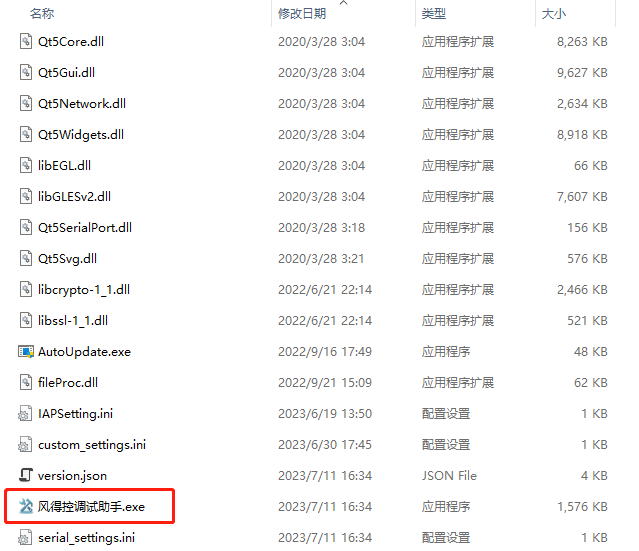
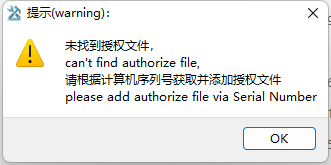
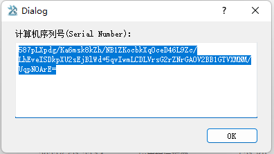
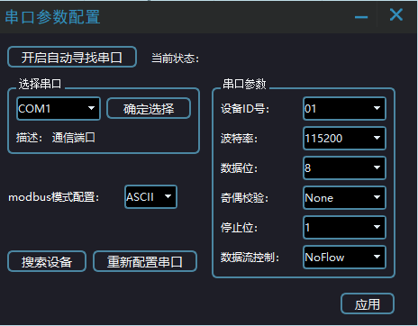

(1) 准备好windows系统电脑。
(2) 将压缩文件“伺服调试助手V1.0”复制到任意文件夹。
(3) 软件第一次安装使用需要授权才能使用，授权请联系我们工程师进行授权使用。
(1) 直接解压压缩包到当前文件夹后，在文件夹找到调试助手应用程序打开即可，如下图所示。

右键发送到桌面快捷方式，最终桌面会出现“风得控调试助手V1.0”的快捷图标。
(2) 如果用户电脑是首次安装此软件，需要安装转串口驱动程序，则应该在程序安装目录找到名为“串口驱动(USB 串口驱动).zip”的文件，解压后进行安装转串口驱动。 此安装程序只需要在第一次使用时需要安装。不需要重复安装。
(3) 首次进入软件，会提示需要授权：

点击“OK”会弹出一串序列号，将序列号完整复制后发送给我司的工程师，生成授权文件。

将授权文件复制到软件根目录，选择打开，软件会提示重新进入已完成授权；至此，软件的安装就完成了。
(4) 完成以上安装步骤，运行软件，如果软件启动成功，应该会打开如下软件界面，表示软件安装成功了。

(5) 如果在打开软件的过程中，提示缺少某些库文件，则说明该电脑系统比较旧。
解决方式：
① ：可以在网上搜索并下载该库文件，然后直接拷贝到程序安装目录即可，此方式比较方便快捷。
② ：将此报错拍照传给我们的相关人员，我们会在第一时间为用户解决； 同时，我们会将此补丁记录。
注意事项
由于不涉及到库的安装，在正常情况下，只要满足配置要求，所有电脑都能够安装成功。
如果安装失败，请及时联系我们。